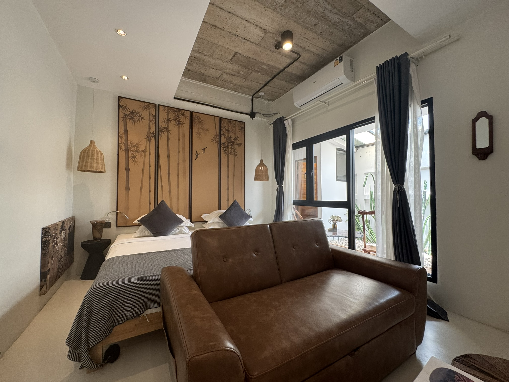

Natural Calm
Green views, warm textures, and soft lighting create a gentle pause between Bangkok adventures.
Stay Slow. Stay Soulful.
YOLO Bangkok is a small boutique hotel near Sukhumvit, shaped around quiet rooms, green corners, thoughtful details, and people who care about the feel of your stay.
Our Mood
Bangkok moves quickly. YOLO gives you a place to come back to slowly: a leafy lobby, warm wood, soft linen, relaxing baths, and easy help from a team that knows the neighborhood.
We are not trying to be a grand hotel. We are here for travelers who want comfort with character, privacy with warmth, and a stay that feels personal without feeling complicated.
What Makes YOLO
Green views, warm textures, and soft lighting create a gentle pause between Bangkok adventures.
Start the morning slowly, catch up on plans, or settle into the lobby with an easy cup of coffee.
Close to Terminal 21, local cafes, water taxi routes, shopping, food, and useful city connections.
Ask for arrival tips, food ideas, room recommendations, or anything that makes your stay smoother.

You Only Live Once
For some guests, YOLO is a quiet base before a full Bangkok itinerary. For others, it is the favorite little pause of the trip: a bath, a coffee, a calm room, a kind recommendation, a night of actual rest.
Explore Rooms